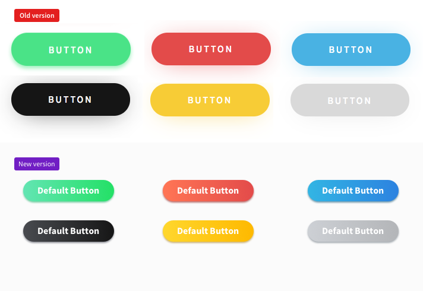
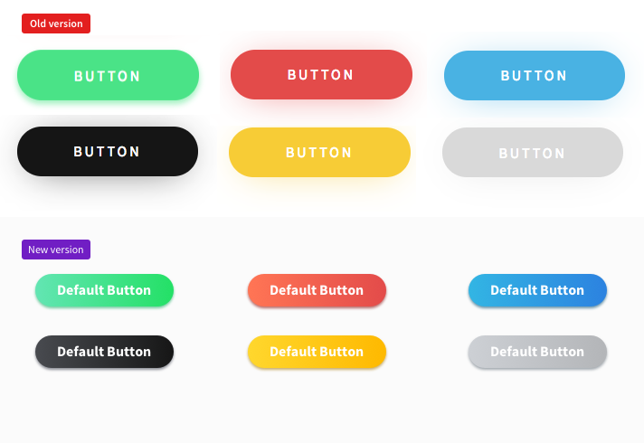
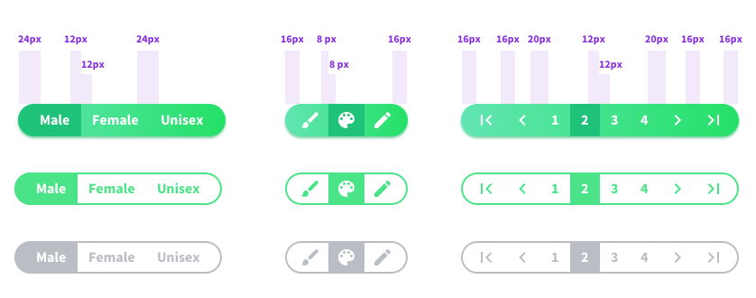
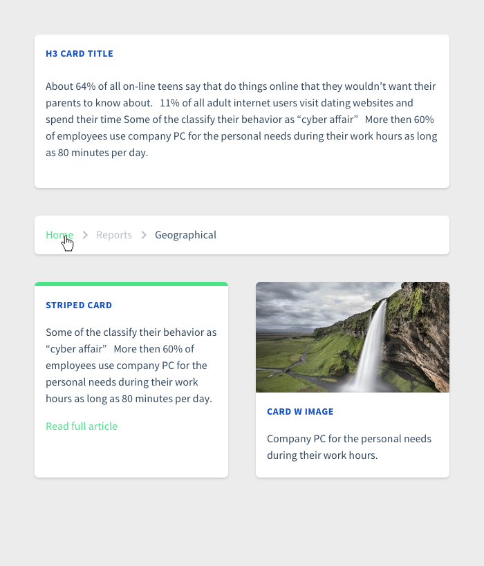

Vuestic Redesign Log
Last update: October 2, 2018.
This document will contain all information about upcoming redesign of Vuestic theme.
Goals & Challenges
- Improve visual style by fixing text styles and elements (such as buttons)
- Add new features for data rich components (tables, graphs, charts)
- Introduce new approach by changing general layout and offer new components
- Make the transition from current version to a new one very smooth
- Deliver new designs to developers in a way not a single minor tweak is ignored
- Filters
- Step Wizard
- Timeline
- Cards
- Overall shadows and corners (cards, sidebar)
- Extra: Add navigation with contents on the left (bootstrap)
Completed Changes
- Typography
- Buttons
- Inputs
- Dropdown selects
- Checkboxes, radio buttons
- Icons
- Forms
- Modals
- Notifications
- Cards
- Visual style
- Layout
Typography
Let's reduce amount of font styles and use 2 only: 400 (regular) and 700 (bold) font weights.
- Headings updated
- Input label updated
- Table heading updated
- Small font style (0.875rem) introduced. It is used to display table data and extra info for inputs (errors, notes), mini buttons — default Bootstrap is EM based and doesn't meet out needs.
Buttons
The styles were re-worked and several new ones were introduced.
- Buttons sizes were changed: default size became smaller.
- The difference between large/default/small buttons was increased.
- Extra styles introduced: all button sizes with icons, dropdown arrows.
- New style — bordreless button — was added.
- Yellow and grey colors (hover colors as well) changed.
- Button groups updated.

 

Button Groups
Updated styles for button groups and inline selects. Can be used for pagination, table view select, etc.
Inputs
Inputs were improved taking in consideration three things: 1) optimize space usage; 2) increase contrast when mupltiple inputs are on the form; 3) add missing styles; 4) use rich Material Icons Library as the default source of icons.
- Reduced height to 2.375rem allowed to save up to 10% space
- Light grey background #f5f8f9 makes a single input stand out more
- Thinner bottom border offers lighter & cleaner style
- Consistent icons for inputs. I updated Vuestic icons pack to set default icons. Currently they belong to different sets (Ionic, FontAwesome).
- New styles added: w icons, masks, required inputs.
Input Labels
.old_label
font-size: 0.6rem
font-weight: 600
color: #4AE387
text-transform: uppercase
letter-spacing: 0
.new_label
font-size: 0.5rem
font-weight: 700
color: #4AE387
text-transform: uppercase
letter-spacing: 0.0375rem
Dropdown Selects
Dropdown select style was totally updated: swtiched from black version to light grey.
Organizing Forms: Tabs & Groups
Updated tabs style fits more lightboxes than presentations: it requires way less space than before. Group styles introduced.


Btw there is a bug with a mobile version of Tabs right now. You can tap 'clear' and remove everything. We should fix it.
Checkboxes, Radio Buttons
Maring was decreased to .5rem, rounded corners added.

Icons
Basic Vuestic icon pack was improved. It consists of icons that can be used in inputs, tables, etc.
We should also include Google Material Icons to Icons section.
Tables
Tables is one of the most important parts of the dashboard. I suggest not only tweaking visual style, but also adding new features.
- Column headings updated (they differ from input labels).
- Main font size reduced.
- Actions as text and icons.
- Default & colored backgrounds updated.
- Yellow and grey labels updated.
- New type of graph included.
- Custom labels added.
- Different types of pagination.

There is a bug with pagination. Columns ocasionally change widths and the content wiggles inside the table. Same issue with sortings.
Modals
Modal window rounded corners and shadow updated.
Heading style totally re-worked.

Notifications
Colors, shadows, text styles were updated.
Labels have the same style as in tables.
Cards
Rounded corners, new shadows and titles for different tipes of cards: widgets, breadcrumbs and UI cards.
Visual Style
Reworked. Fresh. Catchy.

Layout
Layout was totally re-worked. Right now it's more feature reach, content focused and stylish AF. All widgets will be designed with the focus on all features Vuestic offers.